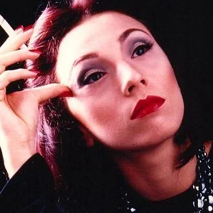

Clarice Lispector
Pequeno resumo sobre a autora
Clarice Lispector foi uma escritora brasileira. Ela pertence à terceira geração modista(pós-modernismo). Uma de suas obras mais famosas é o livro "A hora da estrela". Clarice Lispector é uma escritora braasileira. Ela nasceu na Ucrânia, mas chegou ao Brasil quando tinha dois anos de idade. Mais tarde, fez faculdade de Direito, morou em diversos países em companhia do marido Cônsul, publicou muitos livros e também atuou como jornalista. A autora, que faleceu em 9 de dezembro de 1977, no Rio de janeiro, faz parte da terceira geração modernista (ou pós-modernismo). Suas obras apresentam fluxo de consciência, fragmentação e metalinguagem, características que podem ser observadas em a hora da estrela, uma de seus livros mais conhecidos.Bibliografia
Clarice lispector (Haia Lispector), nasceu em 10 de dezembro de 1920, em Tchetchelnik, na ucrânia. Seus pais eram judeus e, quando a filha nasceu, estavam saindo do país em busca de um lugar melhor para viver. Assim, eles e suas três filhas chegaram ao Brasil em 1922 e foram viver em Maceió. Aqui, a menina Haia passou a ser chamada de Clarice. Em 1925, a família se mudou para Recife. Três anos depois, Clarice começou a estudar na escola João Barbalho e aprendeu a ler. Já em 1930 a autora escreveu seu primeiro texto literário, uma peça de teatro intitulada Pobre menina rica, a qual não existe mais. Nesse mesmo ano, ficou órfã de mãe. Dois anos depois, passou a estudar no Ginásio Pernanbuco. Mas, em 1935, ela e a família fixaram residêcia na cidade do Rio de Janeiro, onde terminou o ginásio (ou esino médio) em 1936. Três anos depois, começou a estudar na Faculdade Nacional de Direito.
Parelamente aos estudos, escrevia contos e trabaalhava como redatora e repórter na Agência Nacional. No ano de 1940, se apaixonou pelo escritor Lúcio cardoso (1912-1968). Ele, porém, era homossexual. Assim, se tornaram grandes amigos. Nesse mesmo ano, o pai da escritora morreu. Ela então passou a morar com suas duas irmãs, na casa de uma delas, que já era casada. Em 1942, iniciou o namoro com seu futuro marido Maury Gurgel Valente (1921-1994). No ano seguinte, se casou, terminou a faculdade de Direito, Além de conseguir obter a naturalização como brasileira. E publicou seu primeiro romance Perto do coração selvagem. O livro ganhou a prêmio Graça Aranha, como melhor romance do ano. Como o marido era Cônsul, se mudou com ele para Belém em 1944. Seis meses depois, eles foram viver em Nápoles, na itália. Em 1945, a autora trabalhou como voluntário no atendimento a feridos na guerra.
No ano seguinte, o casal se mudou para a Suíça, onde nasceu o primeiro filho. Já em 1949, voltaram a morar no rio de janeiro. Mas, em 1950, regressaram à Europa, agora para viver na Inglaterra, onde moraram por seis meses antes de voltarem ao Brasil. Já em 1952, a família fixou residência em Washington, nos Estados Unidos, onde nasceu o segundo filho do casal. Nesse país, Clarice ficou amiga da família do escritor Erico Verissimo (1905-1975). Mas, em 1959, quando se separou do marido, voltou a morar no Brasil, em companhia dos filhos. No ano de 1961, ganhou o Prêmio Jabuti pelo seu livro de contos Laços de família. No ano seguinte, recebeu o Prêmio Carmen Dolores Barbosa. Anos depois, em 1966, ocorreu um incêndio em sua casa após a escritora adormecer e deixar um cigarro aceso. As queimaduras em seu corpo fizeram com que ela ficasse internada duranre seis meses. Assim, em 1967, passou por forte depressão. Apesar disso, começou a escrever crônicas para o jornal do Brasil e ficou bastante popular.
No ano seguinte, também passou a fazer entrevistas com políticos e artistas para a revista Manchete. Além disso, recebeu o prêmio Golfinho de Ouro pelo seu romance Uma aprendizagem ou O livro dos prazeres, de 1969. já em 1975, decidiu se dedicar também à pintura. Em 1976, viajou à Argentina, onde recebeu muitas homenagens. Nesse ano, também recebeu, no Brasil, o prêmio da Fundação Cultural do Distrito Federal, pelo conjunto de obra. Mas morreu em 9 de dezembro de 1977, no Rio de jeneiro, devido a um câncer no ovário. Clarice foi sepultada no cemitério comunal Israelita.